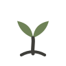
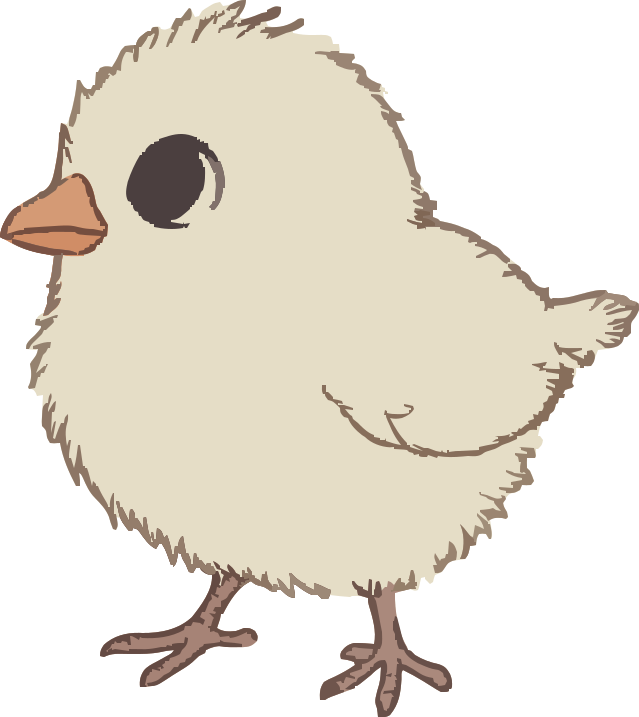
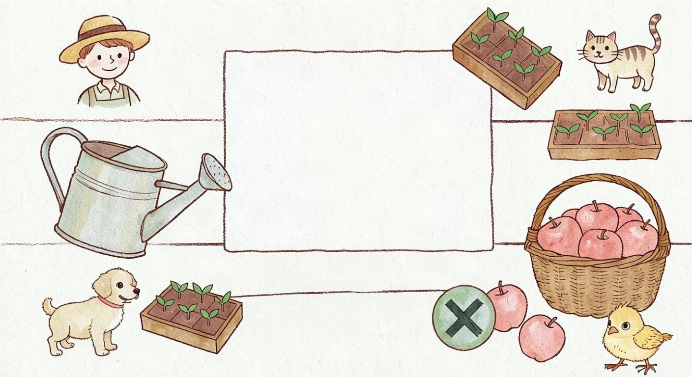

Умный садовод
☰
💾 Сохранить
📂 Загрузить
🧹 Сбросить
🕘 История
🎓 Обучение
📖 Книга отзывов
Советчик

1
🌿 Добавьте объект
2
🖐 Перетащите его
3
⚙️ Кликните дважды, чтобы настроить
4
💾 Сохраните план в файл
✕
🏡
Ширина, м
Длина, м
Сетка, м
0.1
0.25
0.5
1
Солнце
Север
Северо-Запад
Запад
Юго-Запад
Юг
Юго-Восток
Восток
Северо-Восток
🤝 Совместимость
3D
🖼 Постер PNG
🏠 Постройка
🌱 Теплица
🥕 Грядка
🌳 Дерево
🌵 Кустарник
↩ Отменить
↪ Повтор
☀️
Название
X, м
Y, м
Ширина, м
Длина, м
Высота, м
Культура
Каталог
растений
Календарь
по фазам
Чат
с садоводом
Аналитика
сезона
🏡
Схема
🌱
Растения
🗓
Календарь
💬
Чат
📋
Обзор
📊
Аналитика

Меню
✕
💾
Сохранить
📂
Загрузить
🧹
Сбросить
🕘
История ревизий
🎓
Обучение
📖
Книга отзывов
🐤
Советчик
📱
Мобильная версия
Если в самом браузере включена «Версия для ПК», отключите её один раз в меню браузера (⋮).
🐤
Показывать Цыпу
Умный садовод · v
Добавить на участок
✕
🏠
Постройка
🌱
Теплица
🥕
Грядка
🌳
Дерево
🌵
Кустарник
+
↩
↪
📱 Мобильная версия